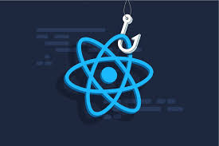

Hooks en React
Introducción a los Hooks
Los hooks en React son funciones que permiten usar estado y otras características de React en componentes funcionales. Fueron introducidos en React 16.8 y revolucionaron la forma de escribir componentes.
useState permite añadir estado a componentes funcionales. useEffect permite realizar efectos secundarios en componentes funcionales, como operaciones de datos, suscripciones, y cambios manuales en el DOM.
Otros hooks importantes incluyen useContext, useRef, useReducer, useCallback y useMemo.
useState y useEffect en Acción
Ejemplo de componente con estados múltiples y efectos secundarios:
import React, { useState, useEffect } from 'react';
function Counter() {
const [count, setCount] = useState(0);
const [name, setName] = useState('');
const [users, setUsers] = useState([]);
// Efecto que se ejecuta después de cada render
useEffect(() => {
document.title = `Contador: ${count}`;
});
// Efecto que se ejecuta solo una vez (componentDidMount)
useEffect(() => {
fetchUsers();
}, []);
// Efecto que se ejecuta cuando count cambia
useEffect(() => {
if (count > 10) {
console.log('¡Contador alto!');
}
}, [count]);
const fetchUsers = async () => {
try {
const response = await fetch('/api/users');
const data = await response.json();
setUsers(data);
} catch (error) {
console.error('Error:', error);
}
};
return (
<div>
<h2>Hola, {name || 'Anónimo'}</h2>
<input
value={name}
onChange={(e) => setName(e.target.value)}
placeholder="Tu nombre"
/>
<p>Has hecho clic {count} veces</p>
<button onClick={() => setCount(count + 1)}>
Incrementar
</button>
<div>
<h3>Usuarios ({users.length})</h3>
{users.map(user => (
<p key={user.id}>{user.name}</p>
))}
</div>
</div>
);
}Hooks Avanzados
import { useContext, useRef, useCallback, useMemo } from 'react';
function AdvancedComponent({ items, onItemClick }) {
const inputRef = useRef(null);
const theme = useContext(ThemeContext);
// useCallback para optimizar funciones
const handleClick = useCallback((item) => {
onItemClick(item);
inputRef.current?.focus();
}, [onItemClick]);
// useMemo para optimizar cálculos costosos
const expensiveValue = useMemo(() => {
return items.reduce((sum, item) => sum + item.value, 0);
}, [items]);
// useRef para referencias DOM
const focusInput = () => {
inputRef.current?.focus();
};
return (
<div style={{ backgroundColor: theme.background }}>
<input ref={inputRef} placeholder="Buscar..." />
<button onClick={focusInput}>Enfocar Input</button>
<p>Valor total: {expensiveValue}</p>
{items.map(item => (
<button
key={item.id}
onClick={() => handleClick(item)}
>
{item.name}
</button>
))}
</div>
);
}Hooks Principales Dominados
- useState: Manejo de estado local en componentes
- useEffect: Efectos secundarios y ciclo de vida
- useContext: Consumo de contexto React
- useRef: Referencias a elementos DOM
- useCallback: Optimización de funciones
- useMemo: Optimización de cálculos costosos
- useReducer: Manejo de estado complejo
Reflexión Personal
Comprendí cómo manejar estados y ciclos de vida con elegancia usando hooks. Esto me permitió crear componentes más dinámicos y eficientes, eliminando la necesidad de componentes de clase en la mayoría de casos.
Los hooks de optimización como useCallback y useMemo me enseñaron la importancia del rendimiento en aplicaciones React, especialmente cuando se manejan grandes cantidades de datos o componentes complejos.
Esta semana consolidó mi comprensión de React moderno y me preparó para desarrollar aplicaciones más sofisticadas y performantes.